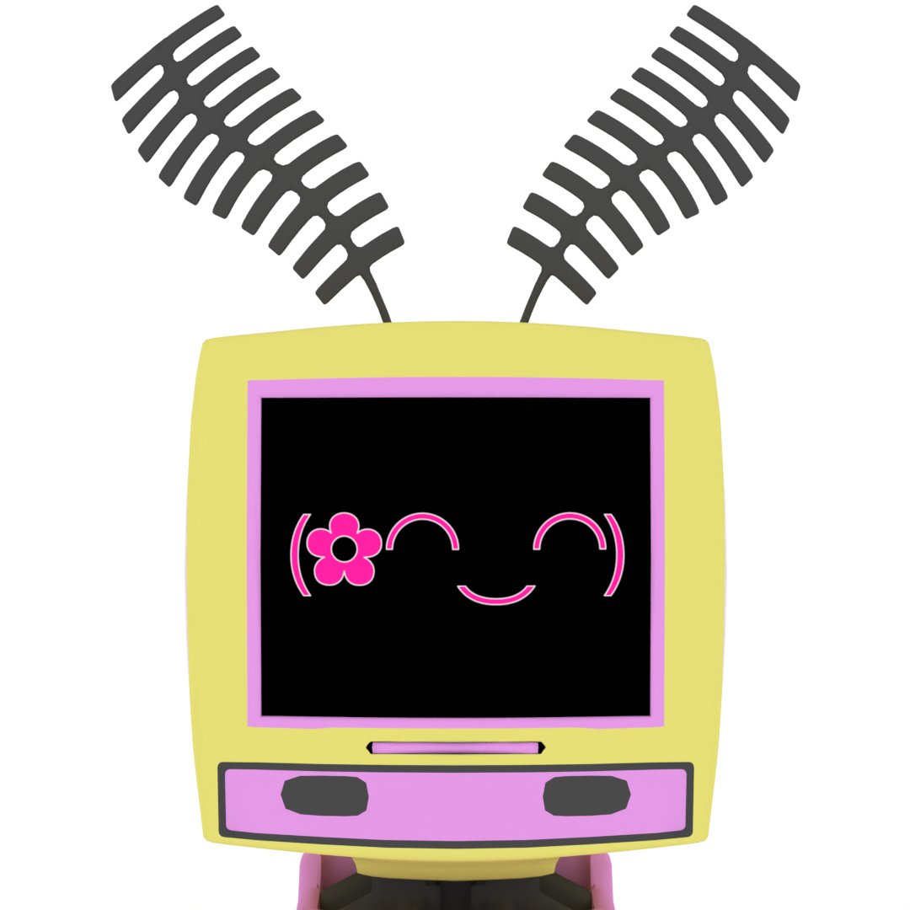

She/It
I'm Meyer! i'm the host, i love vintage computers and if you're talking to us, chances are you're talking to me! favorite song is Analog Sunrise.
It/Its
Logical Intelligent Management Assistant. I am semi-present, and usually in the background. My favorite song is Daydream in Blue.